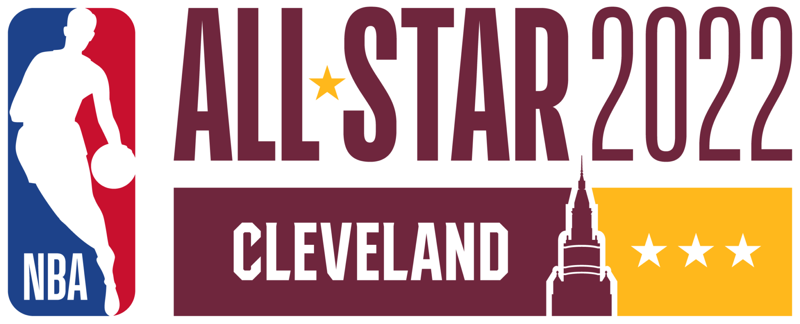

Sekilas Tentang NBA

National Basketball Association atau dikenal dengan singkatan NBA adalah liga bola basket pria di Amerika Serikat dan merupakan liga basket paling bergengsi di dunia. NBA didirikan di New York City pada 6 Juni 1946 dengan nama Basketball Association of America. NBA diikuti oleh 30 tim dari negara Amerika Dan Kanada, dan dari 30 Tim itu dibagi menjadi 2 wilayah yaitu wilayah Timur dan Wilayah Barat.
Wilayah Timur(Eastern Conference) adalah salah satu dari dua konferensi yang membentuk National Basketball Association (NBA), sisi lain dari Wilayah Barat . Kedua konferensi terdiri dari 15 tim yang diorganisasikan menjadi tiga divisi.Pembagian saat ini dimulai pada musim pertandingan 2004-05, ketika tim Charlotte Hornet bergabung sebagai tim ke-30 NBA. Hal ini memindahkan New Orleans Pelicans dari Divisi Tengah di Wilayah Timur ke Divisi Barat Daya di Wilayah Barat. Tim wilayah Timur diantaranya :
- Boston Celtics
- Brooklyn Nets
- New York Knick
- Milwaukee Bucks
- Cleveland Cavaliers
- Miami Heat
- Philadelphia 76ers
- Chicago Bulls
- Toronto Raptors
- Atlanta Hawks
- Charlotte Hornets
- Indiana Pacers
- Detroit Piston
- Orlando Magic
- Washington Wizards
Wilayah Barat(western Conference) adalah salah satu dari dua konferensi yang membentuk National Basketball Association (NBA), yang lainnya adalah Wilayah Timur. Kedua konferensi terdiri dari 15 tim yang diorganisasikan menjadi tiga divisi. Penyelarasan divisi saat ini diadopsi pada awal musim 2004-05 , ketika Charlotte Hornets sekarang mulai bermain sebagai tim ke-30 NBA. Ini mengharuskan pemindahan New Orleans Pelicans dari Divisi Tengah Wilayah Timur ke Divisi Barat Daya Wilayah Barat yang baru dibuat. Tim wilayah Barat diantaranya :
- Dallas Mavericks
- Denver Nuggets
- Golden State Warriors
- Houston Rockets
- Los Angeles Clippers
- Los Angeles Lakers
- Memphis Grizzlies
- Minnesota Timberwolves
- New Orleans Pelicans
- Oklahoma City Thunder
- Phoenix Suns
- Portland Trail Blazers
- Sacramento Kings
- San Antonio Spurs
- Utah Jazz
Format Game di NBA
NBA terdiri dari 30 tim yang tersebar di berbagai kota. 29 tim berasal dari Amerika dan 1 tim berasal dari Kanada. 30 tim tersebut terbagi menjadi 2 bagian wilayah. 15 tim berasal dari wilayah barat (Western Conference) dan sisanya berasal dari wilayah timur (Eastern Conference). Selama 1 musim, setiap tim akan bertanding dengan 29 tim lainnya. Suatu tim bisa bertemu hingga 4x dengan tim lain jika menempati wilayah yang sama dan 2x jika bertemu dengan tim wilayah yang berbeda. Jumlah pertandingan suatu tim dalam 1 musim adalah 82. Setelah 1 musim reguler selesai, 8 tim terbaik dari masing-masing wilayah akan masuk babak playoff dimana suatu tim akan bertanding untuk menentukan siapa yang berhak bertanding di NBA Finals, dimana tim terbaik barat akan bertemu dengan tim terbaik timur. Playoff sendiri memiliki format best of 7, dimana tim pertama yang mendapatkan 4 kemenangan akan lolos ke babak berikutnya.
NBA All-Star Game
NBA All-Star Game adalah pertandingan eksibisi bola basket yang diselenggarakan setiap bulan Februari oleh National Basketball Association (NBA) dan menampilkan 24 pemain bintang liga tersebut. Ini adalah acara unggulan NBA All-Star Weekend, acara tiga hari yang berlangsung dari Jumat hingga Minggu. All-Star Game pertama kali dimainkan di Boston Garden pada 2 Maret 1951. Susunan pemain awal untuk setiap regu dipilih melalui kombinasi voting penggemar, pemain, dan media,sementara pelatih kepala memilih cadangan ,tujuh pemain dari konferensi masing-masing, sehingga masing-masing tim memiliki daftar 12 orang. Pelatih tidak diperbolehkan untuk memilih pemain mereka sendiri.Jika pemain yang dipilih tidak dapat berpartisipasi karena cedera,komisaris NBA akan memilih penggantinya.
Sejak 2018, pengambil suara terkemuka untuk setiap konferensi ditunjuk sebagai kapten tim dan dapat memilih dari kumpulan cadangan All-Star untuk membentuk tim mereka terlepas dari konferensi. LeBron James dan Stephen Curry menjadi pemain pertama yang memilih tim melalui format baru, memilih pemain untuk NBA All-Star Game 2018 dalam draf non-televisi pada 25 Januari. kapten untuk Game All-Star 2019, James dan Giannis Antetokounmpo , menyusun tim mereka secara langsung di TNT. Tim juga bermain untuk amal pilihan mereka untuk membantu permainan tetap kompetitif. Pelatih kepala tim dengan rekor terbaik di setiap konferensi dipilih untuk memimpin konferensi mereka masing-masing di Game All-Star, dengan larangan penampilan berturut-turut.Dikenal sebagai "Aturan Riley", aturan ini dibuat setelah pelatih kepala Los Angeles Lakers yang selalu sukses, Pat Riley , mendapatkan hak untuk melatih tim Wilayah Barat delapan kali dalam sembilan musim antara 1982 dan 1990. Pelatih tim dengan rekor terbaik berikutnya menjadi pelatih.
Profile Penulis
| Nama | : | Rangga Driya Nugraha |
| NIM | : | 10122046 |
| Kelas | : | IF-2 |